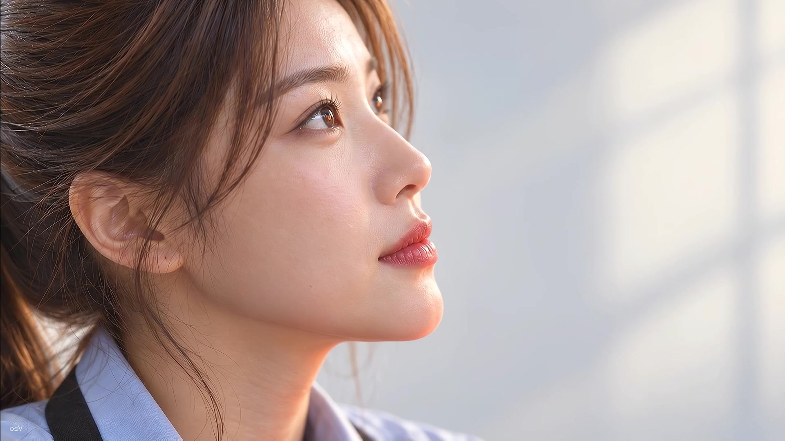
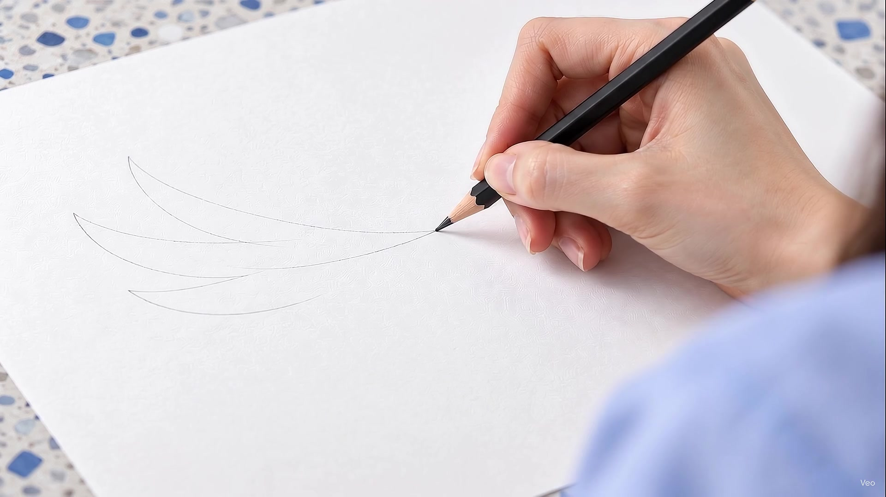
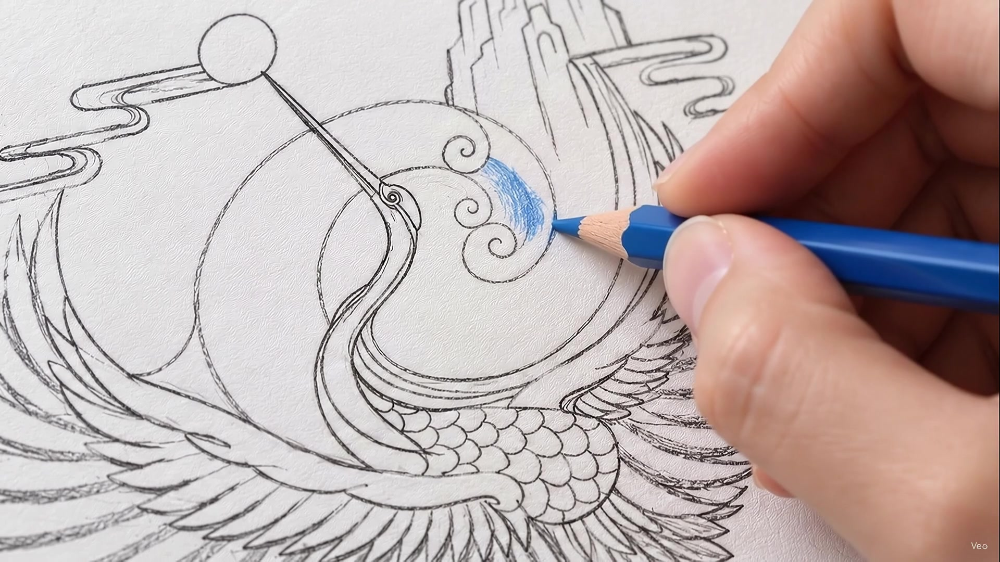
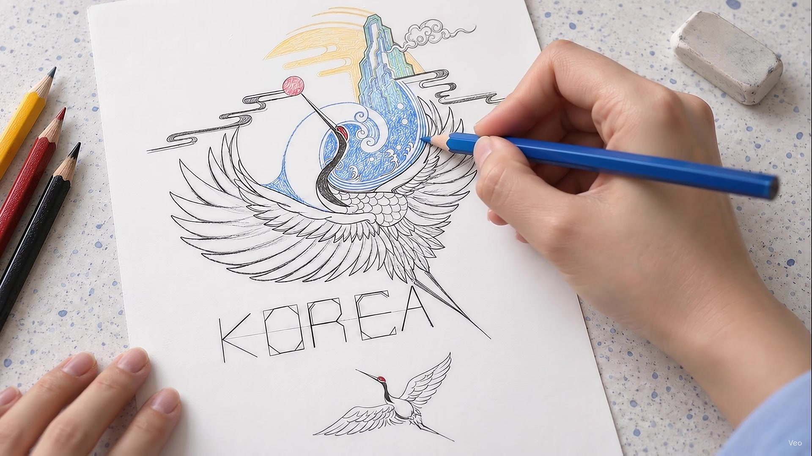
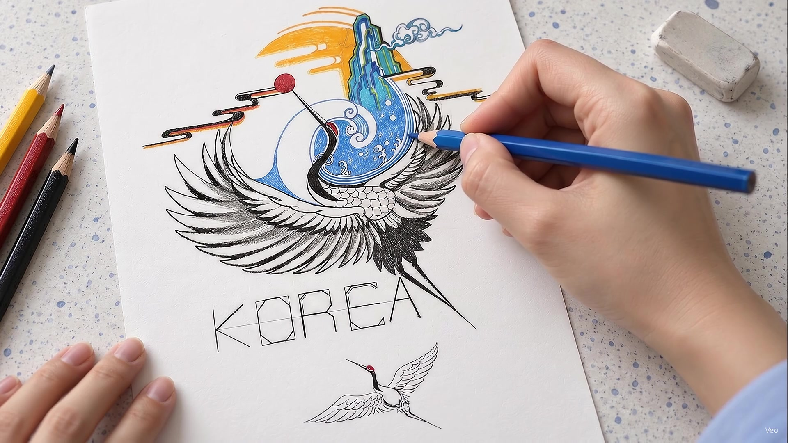

0100—02초기존 마지막 장면을 첫 장면으로 이동
인물 클로즈업
우측 상단을 바라보는 얼굴. 눈과 피부에 초점을 두고, 시선과 표정 변화는 작게 유지합니다. 기존 좌우 반전 상태를 그대로 사용합니다.
기존 첫 장면은 제외하고, 마지막 인물 클로즈업을 맨 앞으로 옮깁니다. 각 장면은 약 2초로 줄여 선긋기부터 완성까지 간결하게 이어갑니다.

0100—02초우측 상단을 바라보는 얼굴. 눈과 피부에 초점을 두고, 시선과 표정 변화는 작게 유지합니다. 기존 좌우 반전 상태를 그대로 사용합니다.

0202—04초연필 끝과 종이가 만나는 부분을 클로즈업합니다. 짧은 선을 긋는 동작만 사용하고, 손을 들거나 다시 잡는 구간은 제외합니다.

0304—06초밑그림의 파도 부분에 파란 색연필로 색을 넣습니다. 색연필 심과 채색 부분의 색을 맞추고, 종이의 결을 살립니다.
아래의 작품을 바라보는 얼굴을 가까이 보여줍니다. 캐릭터시트의 눈·코·입 형태를 유지하고, 고개 움직임이 적은 구간을 사용합니다.

0508—10초일부 색이 채워진 작품을 위쪽 사선 구도로 보여줍니다. 파란 색연필이 파도 부분에 닿는 안정된 구간을 사용합니다.

0610—12초완성된 학 그림과 KOREA 배치를 보여주며 작은 마무리 터치로 끝냅니다. 인물 클로즈업을 다시 반복하지 않습니다.
장면 연결: 경계에 0.12~0.20초의 짧은 디졸브를 넣는 계획입니다. 두 화면이 겹치는 시간은 12초 타임라인 안에서 조정해, 전환 때문에 장면이 길게 느껴지지 않도록 합니다.
고정 요소: 승인된 캐릭터 얼굴, 블루 스튜디오, 로고와 GODO 앞치마, 학 그림, 책상 위의 종이, 연필·색연필만 사용하는 설정을 유지합니다.
동작: 기존 영상의 안정된 구간을 골라 2초 안에 배치합니다. 3~4초짜리 장면 전체를 무조건 빠르게 돌리는 방식은 사용하지 않습니다.
현재 V4 영상에서 추출한 실제 프레임으로 구성한 편집 계획입니다. 이미지를 누르면 크게 볼 수 있습니다. 새 영상은 아직 편집·생성하지 않았으며, 사이트의 V1~V4는 그대로 유지됩니다.